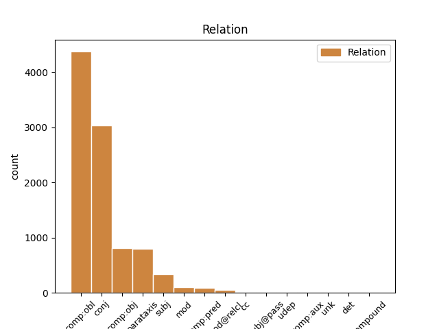
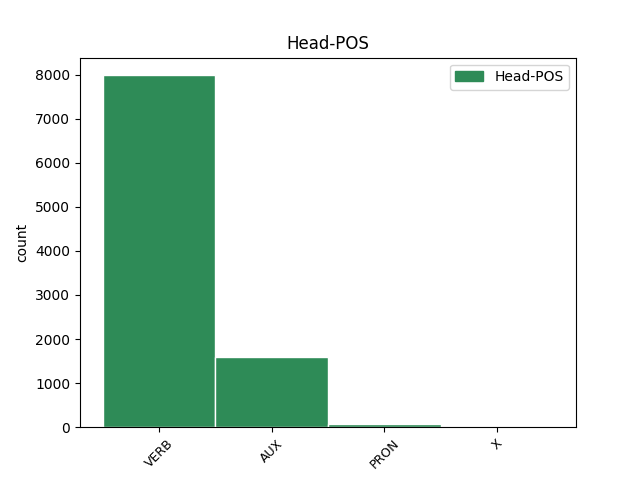
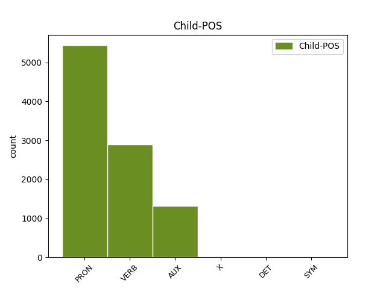

Distribution of features within this leaf



Agreement Rules sorted by frequency.
- When the dependent token is the oblique complements(comp:obl) of the head token,
1 En _ _ _ _ 0 _ _ _
2 1991 _ _ _ _ 0 _ _ _
3 , _ _ _ _ 0 _ _ _
4 como _ _ _ _ 0 _ _ _
5 ya _ _ _ _ 0 _ _ _
6 está _ _ _ _ 0 _ _ _
7 indicado _ _ _ _ 0 _ _ _
8 en _ _ _ _ 0 _ _ _
9 el _ _ _ _ 0 _ _ _
10 párrafo _ _ _ _ 0 _ _ _
11 anterior _ _ _ _ 0 _ _ _
12 , _ _ _ _ 0 _ _ _
13 se él PRON _ Case=Acc,Dat|Person=3|PrepCase=Npr|PronType=Prs|Reflex=Yes 14 comp:obl _ _
14 creó crear VERB _ Mood=Ind|Number=Sing|Person=3|Tense=Past|VerbForm=Fin 0 _ _ _
15 un _ _ _ _ 0 _ _ _
16 equipo _ _ _ _ 0 _ _ _
17 ad _ _ _ _ 0 _ _ _
18 hoc _ _ _ _ 0 _ _ _
19 para _ _ _ _ 0 _ _ _
20 averiguar _ _ _ _ 0 _ _ _
21 como _ _ _ _ 0 _ _ _
22 se _ _ _ _ 0 _ _ _
23 podía _ _ _ _ 0 _ _ _
24 desarrollar _ _ _ _ 0 _ _ _
25 el _ _ _ _ 0 _ _ _
26 Dialogo _ _ _ _ 0 _ _ _
27 Social _ _ _ _ 0 _ _ _
28 , _ _ _ _ 0 _ _ _
29 este _ _ _ _ 0 _ _ _
30 equipo _ _ _ _ 0 _ _ _
31 estaba _ _ _ _ 0 _ _ _
32 formado _ _ _ _ 0 _ _ _
33 por _ _ _ _ 0 _ _ _
34 representantes _ _ _ _ 0 _ _ _
35 de _ _ _ _ 0 _ _ _
36 todas _ _ _ _ 0 _ _ _
37 las _ _ _ _ 0 _ _ _
38 organizaciones _ _ _ _ 0 _ _ _
39 relacionadas _ _ _ _ 0 _ _ _
40 con _ _ _ _ 0 _ _ _
41 CES _ _ _ _ 0 _ _ _
42 , _ _ _ _ 0 _ _ _
43 UNICE _ _ _ _ 0 _ _ _
44 y _ _ _ _ 0 _ _ _
45 CEEP _ _ _ _ 0 _ _ _
46 ; _ _ _ _ 0 _ _ _
1 Jazmin _ _ _ _ 0 _ _ _
2 es ser AUX _ Mood=Ind|Number=Sing|Person=3|Tense=Pres|VerbForm=Fin 0 _ _ _
3 todo _ _ _ _ 0 _ _ _
4 lo _ _ _ _ 0 _ _ _
5 contrario _ _ _ _ 0 _ _ _
6 , _ _ _ _ 0 _ _ _
7 es _ _ _ _ 0 _ _ _
8 tímida _ _ _ _ 0 _ _ _
9 y _ _ _ _ 0 _ _ _
10 callada _ _ _ _ 0 _ _ _
11 , _ _ _ _ 0 _ _ _
12 pero _ _ _ _ 0 _ _ _
13 siempre _ _ _ _ 0 _ _ _
14 es ser AUX _ Mood=Ind|Number=Sing|Person=3|Tense=Pres|VerbForm=Fin 2 conj _ _
15 arrastrada _ _ _ _ 0 _ _ _
16 por _ _ _ _ 0 _ _ _
17 las _ _ _ _ 0 _ _ _
18 locuras _ _ _ _ 0 _ _ _
19 y _ _ _ _ 0 _ _ _
20 travesuras _ _ _ _ 0 _ _ _
21 que _ _ _ _ 0 _ _ _
22 inventa _ _ _ _ 0 _ _ _
23 Alma _ _ _ _ 0 _ _ _
24 . _ _ _ _ 0 _ _ _
1 En _ _ _ _ 0 _ _ _
2 1991 _ _ _ _ 0 _ _ _
3 , _ _ _ _ 0 _ _ _
4 como _ _ _ _ 0 _ _ _
5 ya _ _ _ _ 0 _ _ _
6 está _ _ _ _ 0 _ _ _
7 indicado _ _ _ _ 0 _ _ _
8 en _ _ _ _ 0 _ _ _
9 el _ _ _ _ 0 _ _ _
10 párrafo _ _ _ _ 0 _ _ _
11 anterior _ _ _ _ 0 _ _ _
12 , _ _ _ _ 0 _ _ _
13 se _ _ _ _ 0 _ _ _
14 creó crear VERB _ Mood=Ind|Number=Sing|Person=3|Tense=Past|VerbForm=Fin 0 _ _ _
15 un _ _ _ _ 0 _ _ _
16 equipo _ _ _ _ 0 _ _ _
17 ad _ _ _ _ 0 _ _ _
18 hoc _ _ _ _ 0 _ _ _
19 para _ _ _ _ 0 _ _ _
20 averiguar _ _ _ _ 0 _ _ _
21 como _ _ _ _ 0 _ _ _
22 se _ _ _ _ 0 _ _ _
23 podía _ _ _ _ 0 _ _ _
24 desarrollar _ _ _ _ 0 _ _ _
25 el _ _ _ _ 0 _ _ _
26 Dialogo _ _ _ _ 0 _ _ _
27 Social _ _ _ _ 0 _ _ _
28 , _ _ _ _ 0 _ _ _
29 este _ _ _ _ 0 _ _ _
30 equipo _ _ _ _ 0 _ _ _
31 estaba estar AUX _ Mood=Ind|Number=Sing|Person=3|Tense=Imp|VerbForm=Fin 14 parataxis _ _
32 formado _ _ _ _ 0 _ _ _
33 por _ _ _ _ 0 _ _ _
34 representantes _ _ _ _ 0 _ _ _
35 de _ _ _ _ 0 _ _ _
36 todas _ _ _ _ 0 _ _ _
37 las _ _ _ _ 0 _ _ _
38 organizaciones _ _ _ _ 0 _ _ _
39 relacionadas _ _ _ _ 0 _ _ _
40 con _ _ _ _ 0 _ _ _
41 CES _ _ _ _ 0 _ _ _
42 , _ _ _ _ 0 _ _ _
43 UNICE _ _ _ _ 0 _ _ _
44 y _ _ _ _ 0 _ _ _
45 CEEP _ _ _ _ 0 _ _ _
46 ; _ _ _ _ 0 _ _ _
1 De _ _ _ _ 0 _ _ _
2 la _ _ _ _ 0 _ _ _
3 Vega _ _ _ _ 0 _ _ _
4 ha _ _ _ _ 0 _ _ _
5 pedido _ _ _ _ 0 _ _ _
6 respetar _ _ _ _ 0 _ _ _
7 los _ _ _ _ 0 _ _ _
8 tiempos _ _ _ _ 0 _ _ _
9 de _ _ _ _ 0 _ _ _
10 los _ _ _ _ 0 _ _ _
11 procesos _ _ _ _ 0 _ _ _
12 y _ _ _ _ 0 _ _ _
13 de _ _ _ _ 0 _ _ _
14 la _ _ _ _ 0 _ _ _
15 misma _ _ _ _ 0 _ _ _
16 manera _ _ _ _ 0 _ _ _
17 que _ _ _ _ 0 _ _ _
18 no _ _ _ _ 0 _ _ _
19 ha _ _ _ _ 0 _ _ _
20 querido _ _ _ _ 0 _ _ _
21 entrar _ _ _ _ 0 _ _ _
22 en _ _ _ _ 0 _ _ _
23 la _ _ _ _ 0 _ _ _
24 salida _ _ _ _ 0 _ _ _
25 de _ _ _ _ 0 _ _ _
26 Corbacho _ _ _ _ 0 _ _ _
27 , _ _ _ _ 0 _ _ _
28 tampoco _ _ _ _ 0 _ _ _
29 lo _ _ _ _ 0 _ _ _
30 ha _ _ _ _ 0 _ _ _
31 hecho _ _ _ _ 0 _ _ _
32 la _ _ _ _ 0 _ _ _
33 posible _ _ _ _ 0 _ _ _
34 salida _ _ _ _ 0 _ _ _
35 de _ _ _ _ 0 _ _ _
36 Trinidad _ _ _ _ 0 _ _ _
37 Jiménez _ _ _ _ 0 _ _ _
38 , _ _ _ _ 0 _ _ _
39 que _ _ _ _ 0 _ _ _
40 le él PRON _ Case=Dat|Number=Sing|Person=3|PronType=Prs 41 comp:obj _ _
41 acompañaba acompañar VERB _ Mood=Ind|Number=Sing|Person=3|Tense=Imp|VerbForm=Fin 0 _ _ _
42 en _ _ _ _ 0 _ _ _
43 la _ _ _ _ 0 _ _ _
44 sala _ _ _ _ 0 _ _ _
45 de _ _ _ _ 0 _ _ _
46 prensa _ _ _ _ 0 _ _ _
47 . _ _ _ _ 0 _ _ _
1 Les _ _ _ _ 0 _ _ _
2 he _ _ _ _ 0 _ _ _
3 pedido _ _ _ _ 0 _ _ _
4 donde _ _ _ _ 0 _ _ _
5 podía _ _ _ _ 0 _ _ _
6 encontrar _ _ _ _ 0 _ _ _
7 un _ _ _ _ 0 _ _ _
8 fabricante _ _ _ _ 0 _ _ _
9 de _ _ _ _ 0 _ _ _
10 trofeos _ _ _ _ 0 _ _ _
11 en _ _ _ _ 0 _ _ _
12 metacrilato _ _ _ _ 0 _ _ _
13 , _ _ _ _ 0 _ _ _
14 y _ _ _ _ 0 _ _ _
15 ellos él PRON _ Case=Acc,Nom|Gender=Masc|Number=Plur|Person=3|PronType=Prs 19 subj _ _
16 mismos _ _ _ _ 0 _ _ _
17 me _ _ _ _ 0 _ _ _
18 los _ _ _ _ 0 _ _ _
19 han haber AUX _ Mood=Ind|Number=Plur|Person=3|Tense=Pres|VerbForm=Fin 0 _ _ _
20 fabricado _ _ _ _ 0 _ _ _
21 a _ _ _ _ 0 _ _ _
22 un _ _ _ _ 0 _ _ _
23 precio _ _ _ _ 0 _ _ _
24 muy _ _ _ _ 0 _ _ _
25 interesante _ _ _ _ 0 _ _ _
26 . _ _ _ _ 0 _ _ _
1 Haya _ _ _ _ 0 _ _ _
2 es _ _ _ _ 0 _ _ _
3 un _ _ _ _ 0 _ _ _
4 género _ _ _ _ 0 _ _ _
5 de _ _ _ _ 0 _ _ _
6 dinosaurio _ _ _ _ 0 _ _ _
7 ornitisquio _ _ _ _ 0 _ _ _
8 ornitópodo _ _ _ _ 0 _ _ _
9 basal _ _ _ _ 0 _ _ _
10 que _ _ _ _ 0 _ _ _
11 vivió vivir VERB _ Mood=Ind|Number=Sing|Person=3|Tense=Past|VerbForm=Fin 0 _ _ _
12 a _ _ _ _ 0 _ _ _
13 finales _ _ _ _ 0 _ _ _
14 de _ _ _ _ 0 _ _ _
15 el _ _ _ _ 0 _ _ _
16 período _ _ _ _ 0 _ _ _
17 Cretácico _ _ _ _ 0 _ _ _
18 , _ _ _ _ 0 _ _ _
19 hace hacer VERB _ Mood=Ind|Number=Sing|Person=3|Tense=Pres|VerbForm=Fin 11 mod _ _
20 aproximadamente _ _ _ _ 0 _ _ _
21 84 _ _ _ _ 0 _ _ _
22 millones _ _ _ _ 0 _ _ _
23 de _ _ _ _ 0 _ _ _
24 años _ _ _ _ 0 _ _ _
25 durante _ _ _ _ 0 _ _ _
26 el _ _ _ _ 0 _ _ _
27 Santoniano _ _ _ _ 0 _ _ _
28 , _ _ _ _ 0 _ _ _
29 en _ _ _ _ 0 _ _ _
30 lo _ _ _ _ 0 _ _ _
31 que _ _ _ _ 0 _ _ _
32 hoy _ _ _ _ 0 _ _ _
33 Asia _ _ _ _ 0 _ _ _
34 . _ _ _ _ 0 _ _ _
1 Una _ _ _ _ 0 _ _ _
2 posibilidad _ _ _ _ 0 _ _ _
3 que _ _ _ _ 0 _ _ _
4 tiene _ _ _ _ 0 _ _ _
5 esta _ _ _ _ 0 _ _ _
6 habitación _ _ _ _ 0 _ _ _
7 gracias _ _ _ _ 0 _ _ _
8 a _ _ _ _ 0 _ _ _
9 que _ _ _ _ 0 _ _ _
10 es _ _ _ _ 0 _ _ _
11 menos _ _ _ _ 0 _ _ _
12 ruidosa _ _ _ _ 0 _ _ _
13 por _ _ _ _ 0 _ _ _
14 encontrar _ _ _ _ 0 _ _ _
15 se _ _ _ _ 0 _ _ _
16 alejada _ _ _ _ 0 _ _ _
17 de _ _ _ _ 0 _ _ _
18 el _ _ _ _ 0 _ _ _
19 resto _ _ _ _ 0 _ _ _
20 de _ _ _ _ 0 _ _ _
21 cuartos _ _ _ _ 0 _ _ _
22 , _ _ _ _ 0 _ _ _
23 es ser AUX _ Mood=Ind|Number=Sing|Person=3|Tense=Pres|VerbForm=Fin 0 _ _ _
24 la él PRON _ Case=Acc|Gender=Fem|Number=Sing|Person=3|PrepCase=Npr|PronType=Prs 23 comp:pred _ _
25 de _ _ _ _ 0 _ _ _
26 convertir _ _ _ _ 0 _ _ _
27 la _ _ _ _ 0 _ _ _
28 en _ _ _ _ 0 _ _ _
29 un _ _ _ _ 0 _ _ _
30 estudio _ _ _ _ 0 _ _ _
31 . _ _ _ _ 0 _ _ _
1 Los _ _ _ _ 0 _ _ _
2 representantes _ _ _ _ 0 _ _ _
3 de _ _ _ _ 0 _ _ _
4 TAV _ _ _ _ 0 _ _ _
5 , _ _ _ _ 0 _ _ _
6 que _ _ _ _ 0 _ _ _
7 habían _ _ _ _ 0 _ _ _
8 acordado _ _ _ _ 0 _ _ _
9 esperar _ _ _ _ 0 _ _ _
10 dos _ _ _ _ 0 _ _ _
11 semanas _ _ _ _ 0 _ _ _
12 para _ _ _ _ 0 _ _ _
13 llegar _ _ _ _ 0 _ _ _
14 a _ _ _ _ 0 _ _ _
15 un _ _ _ _ 0 _ _ _
16 acuerdo _ _ _ _ 0 _ _ _
17 sobre _ _ _ _ 0 _ _ _
18 la _ _ _ _ 0 _ _ _
19 disputa _ _ _ _ 0 _ _ _
20 , _ _ _ _ 0 _ _ _
21 declararon _ _ _ _ 0 _ _ _
22 que _ _ _ _ 0 _ _ _
23 por _ _ _ _ 0 _ _ _
24 lo él PRON _ Case=Acc|Gender=Masc|Number=Sing|Person=3|PrepCase=Npr|PronType=Prs 0 _ _ _
25 que _ _ _ _ 0 _ _ _
26 ellos _ _ _ _ 0 _ _ _
27 sabían saber VERB _ Mood=Ind|Number=Plur|Person=3|Tense=Imp|VerbForm=Fin 24 mod@relcl _ SpaceAfter=No
28 , _ _ _ _ 0 _ _ _
29 el _ _ _ _ 0 _ _ _
30 acuerdo _ _ _ _ 0 _ _ _
31 que _ _ _ _ 0 _ _ _
32 habían _ _ _ _ 0 _ _ _
33 firmado _ _ _ _ 0 _ _ _
34 con _ _ _ _ 0 _ _ _
35 el _ _ _ _ 0 _ _ _
36 gobierno _ _ _ _ 0 _ _ _
37 de _ _ _ _ 0 _ _ _
38 Irán _ _ _ _ 0 _ _ _
39 el _ _ _ _ 0 _ _ _
40 año _ _ _ _ 0 _ _ _
41 anterior _ _ _ _ 0 _ _ _
42 para _ _ _ _ 0 _ _ _
43 operar _ _ _ _ 0 _ _ _
44 la _ _ _ _ 0 _ _ _
45 Terminal _ _ _ _ 0 _ _ _
46 1 _ _ _ _ 0 _ _ _
47 de _ _ _ _ 0 _ _ _
48 el _ _ _ _ 0 _ _ _
49 aeropuerto _ _ _ _ 0 _ _ _
50 aún _ _ _ _ 0 _ _ _
51 seguía _ _ _ _ 0 _ _ _
52 en _ _ _ _ 0 _ _ _
53 vigor _ _ _ _ 0 _ _ _
54 . _ _ _ _ 0 _ _ _
1 Si _ _ _ _ 0 _ _ _
2 bien _ _ _ _ 0 _ _ _
3 los _ _ _ _ 0 _ _ _
4 premios _ _ _ _ 0 _ _ _
5 eran _ _ _ _ 0 _ _ _
6 anunciados _ _ _ _ 0 _ _ _
7 por _ _ _ _ 0 _ _ _
8 el _ _ _ _ 0 _ _ _
9 importe _ _ _ _ 0 _ _ _
10 total _ _ _ _ 0 _ _ _
11 , _ _ _ _ 0 _ _ _
12 la _ _ _ _ 0 _ _ _
13 realidad _ _ _ _ 0 _ _ _
14 era _ _ _ _ 0 _ _ _
15 que _ _ _ _ 0 _ _ _
16 se _ _ _ _ 0 _ _ _
17 pagaba _ _ _ _ 0 _ _ _
18 en _ _ _ _ 0 _ _ _
19 cuotas _ _ _ _ 0 _ _ _
20 sobre _ _ _ _ 0 _ _ _
21 un _ _ _ _ 0 _ _ _
22 período _ _ _ _ 0 _ _ _
23 que _ _ _ _ 0 _ _ _
24 se _ _ _ _ 0 _ _ _
25 podía _ _ _ _ 0 _ _ _
26 extender _ _ _ _ 0 _ _ _
27 por _ _ _ _ 0 _ _ _
28 algunos _ _ _ _ 0 _ _ _
29 años _ _ _ _ 0 _ _ _
30 , _ _ _ _ 0 _ _ _
31 es ser VERB _ Mood=Ind|Number=Sing|Person=3|Tense=Pres|VerbForm=Fin 37 cc _ _
32 decir _ _ _ _ 0 _ _ _
33 , _ _ _ _ 0 _ _ _
34 el _ _ _ _ 0 _ _ _
35 gobierno _ _ _ _ 0 _ _ _
36 siempre _ _ _ _ 0 _ _ _
37 mantenía mantener VERB _ Mood=Ind|Number=Sing|Person=3|Tense=Imp|VerbForm=Fin 0 _ _ _
38 prácticamente _ _ _ _ 0 _ _ _
39 la _ _ _ _ 0 _ _ _
40 totalidad _ _ _ _ 0 _ _ _
41 de _ _ _ _ 0 _ _ _
42 el _ _ _ _ 0 _ _ _
43 dinero _ _ _ _ 0 _ _ _
44 de _ _ _ _ 0 _ _ _
45 el _ _ _ _ 0 _ _ _
46 premio _ _ _ _ 0 _ _ _
47 en _ _ _ _ 0 _ _ _
48 calidad _ _ _ _ 0 _ _ _
49 de _ _ _ _ 0 _ _ _
50 préstamo _ _ _ _ 0 _ _ _
51 , _ _ _ _ 0 _ _ _
52 mientras _ _ _ _ 0 _ _ _
53 que _ _ _ _ 0 _ _ _
54 era _ _ _ _ 0 _ _ _
55 abonado _ _ _ _ 0 _ _ _
56 a _ _ _ _ 0 _ _ _
57 los _ _ _ _ 0 _ _ _
58 ganadores _ _ _ _ 0 _ _ _
59 . _ _ _ _ 0 _ _ _
1 Anderton _ _ _ _ 0 _ _ _
2 entonces _ _ _ _ 0 _ _ _
3 revela _ _ _ _ 0 _ _ _
4 que _ _ _ _ 0 _ _ _
5 ella él PRON _ Case=Acc,Nom|Gender=Fem|Number=Sing|Person=3|PronType=Prs 6 subj@pass _ _
6 fue ser AUX _ Mood=Ind|Number=Sing|Person=3|Tense=Past|VerbForm=Fin 0 _ _ _
7 asesinada _ _ _ _ 0 _ _ _
8 ya _ _ _ _ 0 _ _ _
9 que _ _ _ _ 0 _ _ _
10 quería _ _ _ _ 0 _ _ _
11 que _ _ _ _ 0 _ _ _
12 le _ _ _ _ 0 _ _ _
13 regresaran _ _ _ _ 0 _ _ _
14 a _ _ _ _ 0 _ _ _
15 Agatha _ _ _ _ 0 _ _ _
16 , _ _ _ _ 0 _ _ _
17 esto _ _ _ _ 0 _ _ _
18 haría _ _ _ _ 0 _ _ _
19 que _ _ _ _ 0 _ _ _
20 el _ _ _ _ 0 _ _ _
21 sistema _ _ _ _ 0 _ _ _
22 fuera _ _ _ _ 0 _ _ _
23 inútil _ _ _ _ 0 _ _ _
24 y _ _ _ _ 0 _ _ _
25 PreCrimen _ _ _ _ 0 _ _ _
26 sería _ _ _ _ 0 _ _ _
27 descontinuado _ _ _ _ 0 _ _ _
28 . _ _ _ _ 0 _ _ _
1 Se _ _ _ _ 0 _ _ _
2 halla _ _ _ _ 0 _ _ _
3 a _ _ _ _ 0 _ _ _
4 una _ _ _ _ 0 _ _ _
5 distancia _ _ _ _ 0 _ _ _
6 aproximada _ _ _ _ 0 _ _ _
7 de _ _ _ _ 0 _ _ _
8 entre _ _ _ _ 0 _ _ _
9 1,5 _ _ _ _ 0 _ _ _
10 y _ _ _ _ 0 _ _ _
11 2,0 _ _ _ _ 0 _ _ _
12 kiloparsecs _ _ _ _ 0 _ _ _
13 de _ _ _ _ 0 _ _ _
14 el _ _ _ _ 0 _ _ _
15 Sol _ _ _ _ 0 _ _ _
16 según _ _ _ _ 0 _ _ _
17 diversos _ _ _ _ 0 _ _ _
18 científicos _ _ _ _ 0 _ _ _
19 , _ _ _ _ 0 _ _ _
20 lo _ _ _ _ 0 _ _ _
21 cual _ _ _ _ 0 _ _ _
22 junto _ _ _ _ 0 _ _ _
23 con _ _ _ _ 0 _ _ _
24 su _ _ _ _ 0 _ _ _
25 posición _ _ _ _ 0 _ _ _
26 en _ _ _ _ 0 _ _ _
27 el _ _ _ _ 0 _ _ _
28 cielo _ _ _ _ 0 _ _ _
29 indica _ _ _ _ 0 _ _ _
30 que _ _ _ _ 0 _ _ _
31 pertenece _ _ _ _ 0 _ _ _
32 posiblemente _ _ _ _ 0 _ _ _
33 a _ _ _ _ 0 _ _ _
34 la _ _ _ _ 0 _ _ _
35 asociación _ _ _ _ 0 _ _ _
36 estelar _ _ _ _ 0 _ _ _
37 Sagittarius _ _ _ _ 0 _ _ _
38 OB1 _ _ _ _ 0 _ _ _
39 , _ _ _ _ 0 _ _ _
40 la _ _ _ _ 0 _ _ _
41 misma _ _ _ _ 0 _ _ _
42 a _ _ _ _ 0 _ _ _
43 la _ _ _ _ 0 _ _ _
44 que _ _ _ _ 0 _ _ _
45 pertenece _ _ _ _ 0 _ _ _
46 por _ _ _ _ 0 _ _ _
47 ejemplo _ _ _ _ 0 _ _ _
48 la _ _ _ _ 0 _ _ _
49 Nebulosa _ _ _ _ 0 _ _ _
50 de _ _ _ _ 0 _ _ _
51 la _ _ _ _ 0 _ _ _
52 Laguna _ _ _ _ 0 _ _ _
53 , _ _ _ _ 0 _ _ _
54 y _ _ _ _ 0 _ _ _
55 su _ _ _ _ 0 _ _ _
56 luminosidad _ _ _ _ 0 _ _ _
57 de _ _ _ _ 0 _ _ _
58 acuerdo _ _ _ _ 0 _ _ _
59 con _ _ _ _ 0 _ _ _
60 diversos _ _ _ _ 0 _ _ _
61 estudios _ _ _ _ 0 _ _ _
62 ha haber AUX _ Mood=Ind|Number=Sing|Person=3|Tense=Pres|VerbForm=Fin 0 _ _ _
63 sido _ _ _ _ 0 _ _ _
64 estimada _ _ _ _ 0 _ _ _
65 entre _ _ _ _ 0 _ _ _
66 200.000 _ _ _ _ 0 _ _ _
67 y _ _ _ _ 0 _ _ _
68 300.000 _ _ _ _ 0 _ _ _
69 veces _ _ _ _ 0 _ _ _
70 la él PRON _ Case=Acc|Gender=Fem|Number=Sing|Person=3|PrepCase=Npr|PronType=Prs 62 udep _ _
71 de _ _ _ _ 0 _ _ _
72 el _ _ _ _ 0 _ _ _
73 Sol _ _ _ _ 0 _ _ _
74 , _ _ _ _ 0 _ _ _
75 lo _ _ _ _ 0 _ _ _
76 que _ _ _ _ 0 _ _ _
77 la _ _ _ _ 0 _ _ _
78 sitúa _ _ _ _ 0 _ _ _
79 entre _ _ _ _ 0 _ _ _
80 las _ _ _ _ 0 _ _ _
81 estrellas _ _ _ _ 0 _ _ _
82 más _ _ _ _ 0 _ _ _
83 luminosas _ _ _ _ 0 _ _ _
84 conocidas _ _ _ _ 0 _ _ _
85 . _ _ _ _ 0 _ _ _
1 El _ _ _ _ 0 _ _ _
2 Doctor _ _ _ _ 0 _ _ _
3 Boskonovitch _ _ _ _ 0 _ _ _
4 y _ _ _ _ 0 _ _ _
5 Yoshimitsu _ _ _ _ 0 _ _ _
6 están estar VERB _ Mood=Ind|Number=Plur|Person=3|Tense=Pres|VerbForm=Fin 30 comp:aux _ _
7 en _ _ _ _ 0 _ _ _
8 los _ _ _ _ 0 _ _ _
9 laboratorios _ _ _ _ 0 _ _ _
10 de _ _ _ _ 0 _ _ _
11 el _ _ _ _ 0 _ _ _
12 primero _ _ _ _ 0 _ _ _
13 , _ _ _ _ 0 _ _ _
14 observan _ _ _ _ 0 _ _ _
15 a _ _ _ _ 0 _ _ _
16 un _ _ _ _ 0 _ _ _
17 ratón _ _ _ _ 0 _ _ _
18 que _ _ _ _ 0 _ _ _
19 está _ _ _ _ 0 _ _ _
20 bebiendo _ _ _ _ 0 _ _ _
21 la _ _ _ _ 0 _ _ _
22 sangre _ _ _ _ 0 _ _ _
23 de _ _ _ _ 0 _ _ _
24 Ogre _ _ _ _ 0 _ _ _
25 , _ _ _ _ 0 _ _ _
26 de _ _ _ _ 0 _ _ _
27 repente _ _ _ _ 0 _ _ _
28 los _ _ _ _ 0 _ _ _
29 dos _ _ _ _ 0 _ _ _
30 salen salir AUX _ Mood=Ind|Number=Plur|Person=3|Tense=Pres|VerbForm=Fin 0 _ _ _
31 corriendo _ _ _ _ 0 _ _ _
32 , _ _ _ _ 0 _ _ _
33 cuando _ _ _ _ 0 _ _ _
34 el _ _ _ _ 0 _ _ _
35 ratón _ _ _ _ 0 _ _ _
36 se _ _ _ _ 0 _ _ _
37 vuelve _ _ _ _ 0 _ _ _
38 gigante _ _ _ _ 0 _ _ _
39 y _ _ _ _ 0 _ _ _
40 destruye _ _ _ _ 0 _ _ _
41 el _ _ _ _ 0 _ _ _
42 laboratorio _ _ _ _ 0 _ _ _
43 . _ _ _ _ 0 _ _ _
1 Por _ _ _ _ 0 _ _ _
2 Dios _ _ _ _ 0 _ _ _
3 , _ _ _ _ 0 _ _ _
4 sres.de sres.de X _ Number=Sing|Person=3 7 unk _ _
5 Google _ _ _ _ 0 _ _ _
6 , _ _ _ _ 0 _ _ _
7 arreglen arreglar VERB _ Mood=Imp|Number=Plur|Person=3|VerbForm=Fin 0 _ _ _
8 este _ _ _ _ 0 _ _ _
9 mapa _ _ _ _ 0 _ _ _
10 . _ _ _ _ 0 _ _ _
1 Abrazo _ _ _ _ 0 _ _ _
2 era _ _ _ _ 0 _ _ _
3 voz _ _ _ _ 0 _ _ _
4 muy _ _ _ _ 0 _ _ _
5 usada _ _ _ _ 0 _ _ _
6 en _ _ _ _ 0 _ _ _
7 las _ _ _ _ 0 _ _ _
8 ceremonias _ _ _ _ 0 _ _ _
9 de _ _ _ _ 0 _ _ _
10 caballería _ _ _ _ 0 _ _ _
11 , _ _ _ _ 0 _ _ _
12 en _ _ _ _ 0 _ _ _
13 que _ _ _ _ 0 _ _ _
14 el _ _ _ _ 0 _ _ _
15 recién _ _ _ _ 0 _ _ _
16 armado _ _ _ _ 0 _ _ _
17 recibía _ _ _ _ 0 _ _ _
18 : _ _ _ _ 0 _ _ _
19 l' l' DET _ Number=Sing|Person=3|PronType=Ind 20 det _ SpaceAfter=No
20 accolade accoladir X _ Number=Sing|Person=3 0 _ _ _
21 , _ _ _ _ 0 _ _ _
22 en _ _ _ _ 0 _ _ _
23 francés _ _ _ _ 0 _ _ _
24 . _ _ _ _ 0 _ _ _
Disagree Examples:
1 Creo creer VERB _ Mood=Ind|Number=Sing|Person=1|Tense=Pres|VerbForm=Fin 22 comp:obj _ _
2 que _ _ _ _ 0 _ _ _
3 es _ _ _ _ 0 _ _ _
4 importante _ _ _ _ 0 _ _ _
5 que _ _ _ _ 0 _ _ _
6 la _ _ _ _ 0 _ _ _
7 democracia _ _ _ _ 0 _ _ _
8 sea _ _ _ _ 0 _ _ _
9 diálogo _ _ _ _ 0 _ _ _
10 y _ _ _ _ 0 _ _ _
11 no _ _ _ _ 0 _ _ _
12 se _ _ _ _ 0 _ _ _
13 responda _ _ _ _ 0 _ _ _
14 a _ _ _ _ 0 _ _ _
15 los _ _ _ _ 0 _ _ _
16 conflictos _ _ _ _ 0 _ _ _
17 sociales _ _ _ _ 0 _ _ _
18 con _ _ _ _ 0 _ _ _
19 bala _ _ _ _ 0 _ _ _
20 " _ _ _ _ 0 _ _ _
21 , _ _ _ _ 0 _ _ _
22 indicó indicar VERB _ Mood=Ind|Number=Sing|Person=3|Tense=Past|VerbForm=Fin 0 _ _ _
23 . _ _ _ _ 0 _ _ _
1 Amaya _ _ _ _ 0 _ _ _
2 refirió _ _ _ _ 0 _ _ _
3 que _ _ _ _ 0 _ _ _
4 a _ _ _ _ 0 _ _ _
5 nivel _ _ _ _ 0 _ _ _
6 nacional _ _ _ _ 0 _ _ _
7 hay _ _ _ _ 0 _ _ _
8 7,870 _ _ _ _ 0 _ _ _
9 trabajadores _ _ _ _ 0 _ _ _
10 no _ _ _ _ 0 _ _ _
11 docentes _ _ _ _ 0 _ _ _
12 , _ _ _ _ 0 _ _ _
13 quienes _ _ _ _ 0 _ _ _
14 " _ _ _ _ 0 _ _ _
15 hemos _ _ _ _ 0 _ _ _
16 decidido _ _ _ _ 0 _ _ _
17 que _ _ _ _ 0 _ _ _
18 si _ _ _ _ 0 _ _ _
19 vamos _ _ _ _ 0 _ _ _
20 a _ _ _ _ 0 _ _ _
21 paro _ _ _ _ 0 _ _ _
22 el _ _ _ _ 0 _ _ _
23 lunes _ _ _ _ 0 _ _ _
24 ( _ _ _ _ 0 _ _ _
25 hoy _ _ _ _ 0 _ _ _
26 ) _ _ _ _ 0 _ _ _
27 se _ _ _ _ 0 _ _ _
28 afectará _ _ _ _ 0 _ _ _
29 las _ _ _ _ 0 _ _ _
30 clases _ _ _ _ 0 _ _ _
31 , _ _ _ _ 0 _ _ _
32 porque _ _ _ _ 0 _ _ _
33 nosotros _ _ _ _ 0 _ _ _
34 somos ser AUX _ Mood=Ind|Number=Plur|Person=1|Tense=Pres|VerbForm=Fin 0 _ _ _
35 los él PRON _ Case=Acc|Gender=Masc|Number=Plur|Person=3|PrepCase=Npr|PronType=Prs 34 comp:pred _ _
36 que _ _ _ _ 0 _ _ _
37 estamos _ _ _ _ 0 _ _ _
38 en _ _ _ _ 0 _ _ _
39 los _ _ _ _ 0 _ _ _
40 centros _ _ _ _ 0 _ _ _
41 educativos _ _ _ _ 0 _ _ _
42 " _ _ _ _ 0 _ _ _
43 , _ _ _ _ 0 _ _ _
44 sentenció _ _ _ _ 0 _ _ _
45 . _ _ _ _ 0 _ _ _
1 Amaya _ _ _ _ 0 _ _ _
2 refirió _ _ _ _ 0 _ _ _
3 que _ _ _ _ 0 _ _ _
4 a _ _ _ _ 0 _ _ _
5 nivel _ _ _ _ 0 _ _ _
6 nacional _ _ _ _ 0 _ _ _
7 hay _ _ _ _ 0 _ _ _
8 7,870 _ _ _ _ 0 _ _ _
9 trabajadores _ _ _ _ 0 _ _ _
10 no _ _ _ _ 0 _ _ _
11 docentes _ _ _ _ 0 _ _ _
12 , _ _ _ _ 0 _ _ _
13 quienes _ _ _ _ 0 _ _ _
14 " _ _ _ _ 0 _ _ _
15 hemos haber AUX _ Mood=Ind|Number=Plur|Person=1|Tense=Pres|VerbForm=Fin 0 _ _ _
16 decidido _ _ _ _ 0 _ _ _
17 que _ _ _ _ 0 _ _ _
18 si _ _ _ _ 0 _ _ _
19 vamos _ _ _ _ 0 _ _ _
20 a _ _ _ _ 0 _ _ _
21 paro _ _ _ _ 0 _ _ _
22 el _ _ _ _ 0 _ _ _
23 lunes _ _ _ _ 0 _ _ _
24 ( _ _ _ _ 0 _ _ _
25 hoy _ _ _ _ 0 _ _ _
26 ) _ _ _ _ 0 _ _ _
27 se _ _ _ _ 0 _ _ _
28 afectará _ _ _ _ 0 _ _ _
29 las _ _ _ _ 0 _ _ _
30 clases _ _ _ _ 0 _ _ _
31 , _ _ _ _ 0 _ _ _
32 porque _ _ _ _ 0 _ _ _
33 nosotros _ _ _ _ 0 _ _ _
34 somos _ _ _ _ 0 _ _ _
35 los _ _ _ _ 0 _ _ _
36 que _ _ _ _ 0 _ _ _
37 estamos _ _ _ _ 0 _ _ _
38 en _ _ _ _ 0 _ _ _
39 los _ _ _ _ 0 _ _ _
40 centros _ _ _ _ 0 _ _ _
41 educativos _ _ _ _ 0 _ _ _
42 " _ _ _ _ 0 _ _ _
43 , _ _ _ _ 0 _ _ _
44 sentenció sentenciar VERB _ Mood=Ind|Number=Sing|Person=3|Tense=Past|VerbForm=Fin 15 parataxis _ SpaceAfter=No
45 . _ _ _ _ 0 _ _ _
1 Os tú PRON _ Case=Acc,Dat|Number=Plur|Person=2|PrepCase=Npr|PronType=Prs 3 comp:obl _ _
2 lo _ _ _ _ 0 _ _ _
3 recomiendo recomir VERB _ Mood=Ind|Number=Sing|Person=1|Tense=Pres|VerbForm=Fin 0 _ _ _
4 y _ _ _ _ 0 _ _ _
5 mas _ _ _ _ 0 _ _ _
6 sabiendo _ _ _ _ 0 _ _ _
7 lo _ _ _ _ 0 _ _ _
8 que _ _ _ _ 0 _ _ _
9 hay _ _ _ _ 0 _ _ _
10 por _ _ _ _ 0 _ _ _
11 ahi _ _ _ _ 0 _ _ _
12 fuera _ _ _ _ 0 _ _ _
13 . _ _ _ _ 0 _ _ _
1 Os _ _ _ _ 0 _ _ _
2 lo él PRON _ Case=Acc|Gender=Masc|Number=Sing|Person=3|PrepCase=Npr|PronType=Prs 3 comp:obj _ _
3 recomiendo recomir VERB _ Mood=Ind|Number=Sing|Person=1|Tense=Pres|VerbForm=Fin 0 _ _ _
4 y _ _ _ _ 0 _ _ _
5 mas _ _ _ _ 0 _ _ _
6 sabiendo _ _ _ _ 0 _ _ _
7 lo _ _ _ _ 0 _ _ _
8 que _ _ _ _ 0 _ _ _
9 hay _ _ _ _ 0 _ _ _
10 por _ _ _ _ 0 _ _ _
11 ahi _ _ _ _ 0 _ _ _
12 fuera _ _ _ _ 0 _ _ _
13 . _ _ _ _ 0 _ _ _